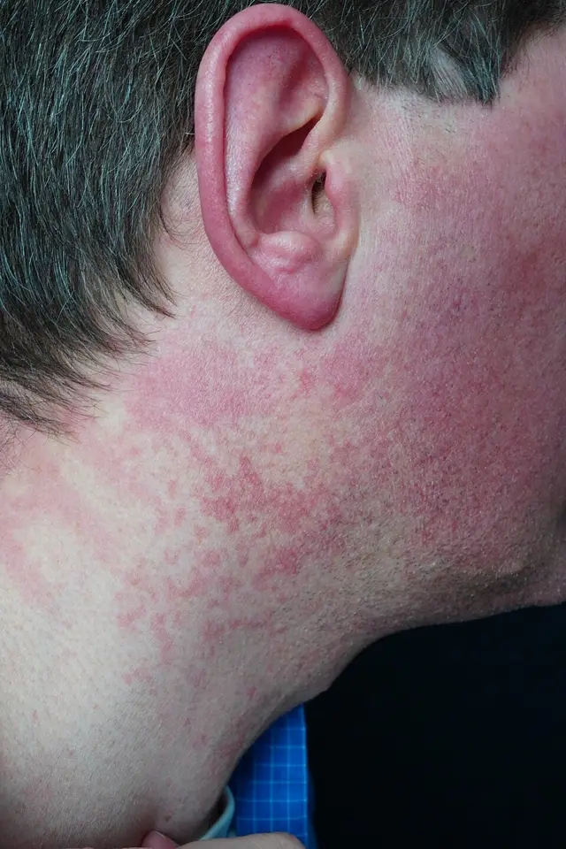
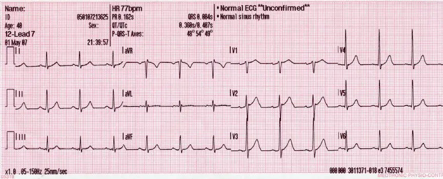

DX.3 — Flush émotionnel, troubles anxieux
| Abréviation | Signification |
|---|---|
| SSP | situation clinique de départ |
| DD | diagnostic différentiel |
| CIM-11 | Classification internationale des maladies, 11e révision |
| CIM-10 | Classification internationale des maladies, 10e révision |
| DSM-5 | Manuel diagnostique et statistique des troubles mentaux, 5e édition |
| ATC | classification anatomique, thérapeutique et chimique |
| AIPS | information professionnelle suisse des médicaments |
| TSH | thyréostimuline |
| fT4 | thyroxine libre |
| ECG | électrocardiogramme |
| FC | fréquence cardiaque |
| PA | pression artérielle |
| ISRS | inhibiteur sélectif de la recapture de la sérotonine |
| TCC | thérapie cognitivo-comportementale |
| 5-HIAA | acide 5-hydroxyindolacétique urinaire |
| GABA | acide gamma-aminobutyrique |
| UE | Union européenne |
| LAMal | loi fédérale sur l'assurance-maladie |
| LAA | loi fédérale sur l'assurance-accidents |
| AI | assurance-invalidité |
| IMC | indice de masse corporelle |
| QT | intervalle QT de l'ECG |
| OFSP | Office fédéral de la santé publique |
| WFSBP | Fédération mondiale des sociétés de psychiatrie biologique |
| SpO2 | saturation pulsée en oxygène |
| DFGe | débit de filtration glomérulaire estimé |
| IRM | imagerie par résonance magnétique |
| MAO | monoamine oxydase |
| GAD | trouble anxieux généralisé (generalized anxiety disorder) |
| HbA1c | hémoglobine glyquée |
| DCI | dénomination commune internationale |
| HTA | hypertension artérielle |
| ST | segment ST de l'ECG (repolarisation ventriculaire) |
1. Définition et sémantique
Un flushLe flush est une rougeur transitoire du visage, du cou et du haut du thorax. Elle vient d'une vasodilatation cutanée et s'accompagne d'une chaleur ressentie émotionnel est une rougeur brève, déclenchée par une émotion, sans maladie organique. Il est lié aux troubles anxieux (CIM-11, chapitre des troubles mentaux) et se code comme symptôme (CIM-10 R23.2).1,2
Maladies et symptômes de l'ensemble du corpsCIM-10, R00–R99
- Symptômes circulatoires et respiratoiresCe bloc (R00–R09) regroupe les signes cardiaques et respiratoires, comme les palpitations, la toux ou l'essoufflement.
- Symptômes digestifs et abdominauxCe bloc (R10–R19) regroupe les signes du tube digestif et du ventre, comme la douleur abdominale ou les nausées.
- Symptômes cutanés et vasomoteurs : le flush est classé dans ce bloc.
- Symptômes nerveux et ostéo-articulairesCe bloc (R25–R29) regroupe les mouvements involontaires anormaux et les signes de l'appareil locomoteur.
- Symptômes de l'appareil urinaireCe bloc (R30–R39) regroupe les signes urinaires, comme la douleur à la miction ou la rétention.
- Symptômes de la connaissance, de la perception, de l'humeur et du comportementCe bloc (R40–R46) regroupe les troubles de la conscience, de la mémoire, de l'humeur et du comportement.
- Symptômes générauxCe bloc (R50–R69) regroupe la fièvre, la fatigue, le malaise et d'autres signes non localisés.
Symptômes cutanés et vasomoteursCIM-10, R23.2 flush
- CyanoseLa cyanose est une coloration bleutée de la peau due à un manque d'oxygène dans le sang.
- PâleurLa pâleur est une perte de la coloration normale de la peau.
- Flush émotionnel
- Pétéchies et ecchymoses spontanéesCes taches sont de petits ou grands saignements sous la peau survenant sans choc.
- Modifications de la texture cutanéeCes modifications regroupent par exemple l'épaississement ou la desquamation de la peau.
Flush émotionnelCIM-10
Trois entités sont voisines du flush émotionnel et se distinguent de lui par leur mécanisme2.
| Entité | Définition et mécanisme |
|---|---|
| Blush | Le blush est une rougeur faciale émotionnelle, brève, déclenchée par la gêne ou le regard d'autrui ; c'est un flush neurogène, non pathologique en soi. |
| Flush ménopausique (DX.1) | Cette bouffée vient de la chute des estrogènes ; elle est nocturne, avec sueurs, chez la femme de 40 à 65 ans2. |
| Flush carcinoïde (DX.9) | Cette rougeur vient de la libération de sérotonine et d'autres médiateurs vasoactifs et s'accompagne souvent de diarrhée et de sifflement2. |
Flush « sec » et « humide »
Le flush sec est une rougeur sans sueur, évocatrice d'un médiateur vasoactif (carcinoïde, médicament, mastocytose). Le flush humide s'accompagne de sueur : ménopause, anxiété, phéochromocytome. Cette distinction oriente le tri initial, sans poser le diagnostic.
2. Épidémiologie (Suisse, puis Europe)
Les troubles anxieux touchent 14,0 % de la population générale sur 12 mois (UE-27, Suisse, Islande, Norvège, 2011)1. Ils dominent les troubles mentaux, et moins d'un tiers des patients sont traités, si bien que le sous-traitement prime1. L'anxiété s'associe au suicide et à la dépression, tandis que le rougissement craint signe l'anxiété sociale3.
| Trouble étudié | Prévalence sur 12 mois (%) | Population, lieu, année |
|---|---|---|
| Troubles anxieux, prévalence sur 12 mois13 | 14,0 | Population générale, UE-27 plus Suisse, Islande, Norvège, 201113 |
| Tout trouble mental, prévalence sur 12 mois13 | 38,2 | Même étude |
Comme moins d'un tiers des patients sont traités1, le médecin de famille doit repérer ces troubles lors de plaintes somatiques répétées, comme le flush ou les palpitations. Ce repérage évite des examens inutiles et raccourcit le délai avant le traitement.
3. Physiopathologie
Un flush est une vasodilatation de la peau, visible au visage, au cou et au thorax. Les vaisseaux y sont superficiels et très nombreux.2
Cascade moléculaire → cellulaire → tissulaire → clinique, de la cause au signe
- Niveau moléculaire, amorce : une émotion active l'amygdale et l'hypothalamus. Adrénaline et noradrénaline se fixent sur les récepteurs adrénergiques.
- Niveau cellulaire, développement : les cellules musculaires cardiaques et vasculaires répondent. La FC et la PA montent ; les petits vaisseaux de la peau se relâchent.
- Niveau tissulaire, installation : la peau du visage et du cou reçoit plus de sang. La température de la joue augmente.3
- Niveau clinique, maintien : le patient voit ou sent la rougeur. Son attention renforce l'anxiété et prolonge le flush ; un cercle vicieux s'installe.
Chez les patients anxieux sociaux qui se plaignent de rougir, la température de la joue et le débit sanguin augmentent plus que chez ceux qui ne s'en plaignent pas3.
| Lésion ou perturbation | Exploration qui la montre | Thérapeutique qui la corrige (mécanisme) |
|---|---|---|
| Hyperactivité sympathique (palpitations, tremblement, flush) | FC, PA, ECG normal hors crise | Inderal® bloque les récepteurs bêta : moins de palpitations et de tremblement |
| Dérèglement de la sérotonine dans les circuits de la peur | Diagnostic clinique, questionnaire | Cipralex® augmente la sérotonine synaptique |
| Cognitions catastrophiques, évitement | Entretien structuré | La TCCThérapie cognitivo-comportementale : exposition progressive et correction des pensées erronées. Traitement de première intention des troubles anxieux. casse le cercle d'évitement |
Le pronostic dépend du trouble anxieux sous-jacent, non du flush. Un trouble non traité se chronicise et se complique de dépression et d'abus d'alcool ou de benzodiazépines.1,4
4. Démarche diagnostique
Face à un flush, on suit les étapes dans l'ordre. Le flush émotionnel se diagnostique après exclusion des causes organiques.2
Étape 1. Exclure les drapeaux rouges
- Flush avec bronchospasme ou hypotensionCe tableau évoque une anaphylaxie ou une libération massive de médiateurs (mastocytose). Le danger est vital : on injecte l'adrénaline par voie intramusculaire sans délai : voir DX.8 et DX.112.
- Flush avec diarrhée aqueuse et sifflementCe tableau évoque un syndrome carcinoïde (DX.9) : la tumeur libère la sérotonine et d'autres médiateurs2. On mesure le 5-HIAA urinaire2.
- Crises avec hypertension sévère, céphalée et sueursCe tableau évoque un phéochromocytome (DX.10) : la tumeur décharge des catécholamines2. On dose les métanéphrines plasmatiques ou urinaires.
- Fièvre, perte de poids, sueurs nocturnesCe tableau évoque une infection, une hémopathie ou une hyperthyroïdie (DX.4)2. On pratique un bilan complet sans attendre.
- Douleur thoracique, syncope, dyspnéeUne attaque de panique peut imiter un infarctus ou une embolie pulmonaire. On élimine ces diagnostics par ECG et examens ciblés.
- Idées suicidairesLe risque est vital dans les troubles anxieux et dépressifs. On évalue le risque et on oriente le patient vers un avis psychiatrique urgent.
Étape 2. En l'absence de drapeau rouge
- On décrit le flush : déclencheur, durée, siège, signes associés.
- On passe en revue les médicaments et l'alcool.
- On examine le patient : peau, FC, PA, cou, thorax, tremblement.
- On dose la TSH et la fT4, puis on fait un ECG.
- On recherche les critères d'un trouble anxieux.
- On pose le diagnostic si les critères sont remplis et si les causes organiques sont écartées.
| DD | Signe ou examen qui tranche | Piège | Conduite si positif |
|---|---|---|---|
| Hyperthyroïdie (DX.4)2 | TSH basse, fT4 élevée | L'anxiété est un symptôme de thyrotoxicose | On fait le bilan thyroïdien et on traite l'hyperthyroïdie (DX.4). |
| Phéochromocytome (DX.10)2 | Métanéphrines élevées | Crises que l'on prend pour de la panique | On oriente le patient vers un bilan spécialisé du phéochromocytome (DX.10). |
| Syndrome carcinoïde (DX.9)2 | 5-HIAA urinaire élevé | Flush parfois déclenché par l'alcool ou l'émotion | On cherche une tumeur neuroendocrine par un bilan spécialisé (DX.9). |
| Anaphylaxie, mastocytose (DX.8, DX.11)2 | Urticaire, hypotension, tryptase élevée | Prurit et flush pris pour de l'anxiété | On injecte l'adrénaline par voie intramusculaire et on appelle les urgences (DX.8). |
Ces quatre diagnostics imitent l'anxiété parce qu'ils partagent un même effecteur, la décharge de médiateurs vasoactifs. Dans l'hyperthyroïdie, l'excès d'hormones thyroïdiennes augmente la sensibilité des récepteurs bêta aux catécholamines, ce qui produit palpitations, tremblement et chaleur. Dans le phéochromocytome, la tumeur libère de façon paroxystique de l'adrénaline et de la noradrénaline, d'où la triade céphalée, sueurs et hypertension. Dans le syndrome carcinoïde, la tumeur libère de la sérotonine et d'autres médiateurs qui dilatent les vaisseaux de la peau2. Dans l'anaphylaxie et la mastocytose, les mastocytes libèrent de l'histamine et d'autres médiateurs, et la tryptase sérique reflète cette libération. Dès lors, un flush qui survient sans déclencheur émotionnel, ou qui s'accompagne de l'un de ces signes, impose de chercher la cause organique avant de parler d'anxiété.
5. Anamnèse ciblée et drapeaux rouges
| Question | Pourquoi elle change la décision |
|---|---|
| Quel déclencheur précède la rougeur ?Un déclencheur émotionnel ou social oriente vers le flush émotionnel. Une rougeur sans émotion évoque une cause organique. | L'émotion active le sympathique ; une rougeur spontanée vient d'un médiateur circulant. |
| La rougeur est-elle brève, avec ou sans sueur ?Un flush émotionnel dure de quelques secondes à quelques minutes. Une durée plus longue ou une sueur profuse oriente ailleurs. | La durée reflète la source du médiateur. |
| Y a-t-il diarrhée, sifflement, démangeaisons ou urticaire ? | Ces signes orientent vers carcinoïde, mastocytoseAccumulation de mastocytes qui libèrent histamine et tryptase, avec flush, prurit et urticaire. ou anaphylaxie : médiateurs libérés par des cellules, pas par le cerveau. |
| Y a-t-il céphalées, hypertension ou pâleur pendant les crises ? | TriadeCéphalée, sueurs, palpitations : tableau classique du phéochromocytome. du phéochromocytome : décharge de catécholamines. |
| Y a-t-il perte de poids, intolérance à la chaleur, tremblement ? | Signes de thyrotoxicoseExcès d'hormones thyroïdiennes circulantes, avec hypermétabolisme. : hypermétabolisme et sensibilité accrue aux catécholamines. |
| Quels médicaments, alcool, caféine, drogues ? | Niacine, inhibiteurs calciques, alcool et stimulants provoquent un flush ou une anxiété. |
| Depuis quand, quelle durée, quel handicap ? | Un trouble anxieux se définit par une durée et un retentissement fonctionnel. |
| Quels symptômes d'anxiété et de peur ? | Inquiétude excessive, évitement et attaques de panique soutiennent le diagnostic. |
| Quels antécédents psychiatriques, familiaux, consommations ? | Comorbidités dépressives et addictives modifient le traitement. |
| Grossesse, allaitement, ménopause ? | Modifie le choix du médicament et oriente vers DX.12. |
| Drapeau rouge | Signification | Action immédiate |
|---|---|---|
| Flush avec hypotension ou bronchospasme | Anaphylaxie ou libération massive de médiateurs | Adrénaline intramusculaire et urgences |
| Flush avec diarrhée aqueuse et sifflement | Syndrome carcinoïde | Dosage du 5-HIAA urinaire |
| Crises avec hypertension sévère, céphalée et sueurs | Décharge de catécholamines, donc phéochromocytome possible | Mesure de la PA, dosage des métanéphrines et orientation hospitalière |
| Douleur thoracique, syncope ou dyspnée | Infarctus ou embolie pulmonaire possibles | ECG et troponine avant de parler de panique |
| Fièvre, perte de poids et sueurs nocturnes | Infection, hémopathie ou hyperthyroïdie possibles | Bilan complet sans attendre |
| Idées suicidaires actives | Risque vital dans les troubles anxieux et dépressifs | Présence continue et avis psychiatrique le jour même |
Voici les drapeaux rouges et la conduite immédiate qu'ils imposent.
- Devant une hypotension, un bronchospasme ou un œdème de la face, on injecte l'adrénaline (Epipen®) par voie intramusculaire et on appelle les urgences. La dose est de 0,3 mg chez l'adulte8.
- Devant une douleur thoracique ou une dyspnée, on fait un ECG et une troponine avant de parler de panique.
- Devant des idées suicidaires actives, on ne laisse pas le patient seul et on obtient un avis psychiatrique le jour même.
- Devant une hypertension sévère avec céphalée et sueurs, on mesure la PA et on oriente le patient vers l'hôpital.
En Suisse, on demande la couverture LAMal et l'arrêt de travail en cours. On interroge aussi l'usage de benzodiazépines prescrites ou achetées.7
6. Examen physique ciblé, région par région
On examine d'abord le normal, puis le pathologique. Le résultat normal d'un examen rassure seulement s'il est répété hors crise.
Région 1. État général et signes vitaux
- Fréquence cardiaque et PATechnique : on installe le patient assis, au repos pendant cinq minutes, avec un brassard adapté, et on prend deux mesures. La FC de repos sert de référence pour juger la tachycardie de crise. Valeur : une tachycardie sinusale de crise est banale, tandis qu'une PA très haute en crise évoque un phéochromocytome. Piège : une mesure isolée au cabinet est faussée par l'anxiété (effet blouse blanche)
- TempératureTechnique : on mesure au thermomètre tympanique ou rectal. Valeur : un flush émotionnel ne s'accompagne pas de fièvre, et une fièvre oriente vers DX.7. Piège : la sensation de chaleur ne constitue pas une fièvre
- Fréquence respiratoire et SpO2Technique : on compte la respiration pendant une minute entière et on pose un oxymètre au doigt. Valeur : une hyperventilation avec SpO2 normale oriente vers la panique. Piège : une SpO2 basse impose de chercher une embolie ou un asthme
Région 2. Peau et visage
- Distribution de la rougeurTechnique : on inspecte le visage, le cou et le thorax en lumière du jour. Valeur : une rougeur du visage et du cou qui disparaît en minutes est typique du flush émotionnel. Piège : des papules, des pustules ou des télangiectasies fixes orientent vers une rosacée (DX.2)
- Urticaire et dermographismeTechnique : on frotte la peau avec le manche d'un stylo, et un trait rouge en relief en quelques minutes est positif. Valeur : ce signe oriente vers une urticaire ou une mastocytose. Piège : le dermographisme peut exister chez des sujets sains
- Humidité des paumesTechnique : on palpe les paumes. Valeur : des paumes froides et moites sont fréquentes dans l'anxiété, tandis que des paumes chaudes et moites évoquent la thyrotoxicose. Piège : ce signe est peu spécifique
Flush du visage et du cou. Cette photographie clinique montre le visage et le cou de profil.

Lisez d'abord seul ce cliché (flush du visage et du cou) : cherchez vous-même le signe.
La copie annotée (flush du visage et du cou) indique les repères décrits ci-dessous.
- n° 1 : La rougeur est confluente sur la joue et de teinte homogène.
- n° 2 : La rougeur se répartit en plaques qui descendent vers le cou.
- n° 3 : Des zones de peau claire séparent les plaques.
- Un flush régresse en minutes, alors qu'une rougeur fixe avec papules évoque une rosacée.
- Cette photographie montre un flush à la niacine, et l'aspect ne permet pas de distinguer la cause.
Ce que l'image décide. On recherche le déclencheur (émotion, médicament, alcool), puis on écarte les causes organiques avant de retenir un flush émotionnel.
Région 3. Cou et thyroïde
- Palpation thyroïdienneTechnique : on se place derrière le patient et on palpe les deux lobes pendant la déglutition. Normal : la glande n'est pas palpable ou elle est lisse. Valeur : un goitre ou un nodule oriente vers DX.4. Piège : une glande normale ne permet pas d'exclure une hyperthyroïdie
- Adénopathies et masse cervicaleTechnique : on palpe les chaînes cervicales. Valeur : un nodule thyroïdien associé à un flush oriente vers un carcinome médullaire (DX.12). Piège : l'absence de signe ne suffit pas
Région 4. Cœur et poumons
- Auscultation cardiaqueTechnique : on ausculte avec la membrane et la cloche aux quatre foyers. Normalement, on entend deux bruits à rythme régulier. Valeur : une arythmie irrégulière oriente vers une fibrillation auriculaire, possible dans l'hyperthyroïdie. Piège : la tachycardie sinusale et la fibrillation se distinguent à l'ECG
- Auscultation pulmonaireTechnique : on écoute les deux champs en inspiration et en expiration. Valeur : des sibilants évoquent un asthme, une anaphylaxie ou un syndrome carcinoïde. Piège : l'hyperventilation peut produire une respiration rapide sans sibilants
Région 5. Abdomen
- Palpation abdominaleTechnique : on palpe les quatre quadrants et le foie. Valeur : une hépatomégalie avec flush oriente vers des métastases hépatiques d'une tumeur neuroendocrine. Piège : un abdomen normal ne permet pas d'exclure la tumeur
Région 6. Neurologique et psychique
- Tremblement des mainsTechnique : on demande bras tendus et doigts écartés, avec une feuille de papier sur le dos des mains. Normal : il n'y a pas de tremblement fin. Valeur : un tremblement fin et rapide évoque la thyrotoxicose ou l'anxiété. Piège : la caféine, les ISRS et les bêta-agonistes en provoquent aussi
- Réflexes ostéotendineuxTechnique : on percute les tendons rotuliens et achilléens. Valeur : des réflexes vifs peuvent exister dans la thyrotoxicose et l'anxiété. Piège : ce signe manque de spécificité
- Observation du comportementTechnique : on observe le discours, le regard, l'agitation et l'évitement. Valeur : l'inquiétude diffuse, les ruminations et l'évitement soutiennent un trouble anxieux. Piège : un syndrome dépressif ou une consommation de substances peut coexister
7. Approche syndromique
7.1 Syndrome d'hyperactivité sympathique
| Signes fonctionnels | Signes physiques | Mécanisme |
|---|---|---|
| PalpitationsPerception des battements cardiaques. Demander au patient de décrire un début et une fin brusques ou progressifs., sueurs, chaleur | Tachycardie sinusaleRythme régulier, né du nœud sinusal, supérieur à 100 par minute. : palper le pouls radial pendant une minute ; normal 60–100 par minute. | Les catécholamines stimulent les récepteurs bêta du cœur. |
| Tremblement ressentiSensation de trembler de l'intérieur ou des mains., nervositéAgitation et irritabilité ressenties. | Tremblement fin des mainsOscillation rapide et de faible amplitude des doigts tendus. : bras tendus, doigts écartés ; absent chez le sujet calme. | Stimulation bêta-adrénergique du muscle strié. |
7.2 Syndrome d'hyperventilation et de panique
| Signes fonctionnels | Signes physiques | Mécanisme |
|---|---|---|
| Paresthésies péribuccales et des mainsFourmillements autour de la bouche et aux doigts, dus à l'alcalose respiratoire., oppression thoracique | Respiration rapide et superficielleHyperventilation : fréquence supérieure à 20 par minute, sans cause pulmonaire. ; spasme carpienFlexion involontaire du poignet et des doigts par hypocalcémie ionisée. possible : observer la main pendant la crise. Mesurer la fréquence respiratoire sur 60 secondes. | L'hyperventilation baisse le CO2 sanguin ; l'alcalose réduit le calcium ionisé libre. |
7.3 Syndrome anxieux généralisé
| Signes fonctionnels | Signes physiques | Mécanisme |
|---|---|---|
| Inquiétude excessiveSoucis répétés, difficiles à contrôler, hors de proportion avec la réalité., irritabilité, troubles du sommeil, fatigue | Tension musculaireContracture douloureuse des trapèzes et du cou. du cou et des épaules : palper les trapèzes ; normal : souples. | Hypervigilance chronique et tension musculaire. |
7.4 Syndrome de flush émotionnel
| Signes fonctionnels | Signes physiques | Mécanisme |
|---|---|---|
| Chaleur du visageSensation de brûlure cutanée au visage, liée à la vasodilatation., gêne, peur de rougirCraintes d'être observé et jugé, entretenant l'anxiété sociale. | Rougeur du visage et du couÉrythème brillant, sans lésion fixe, qui s'efface en quelques minutes à la pression., brève, réversible ; absence de lésion cutanée fixe. | Vasodilatation sympathique du visage.3 |
Ces quatre syndromes se recouvrent, car un même patient peut présenter pendant une crise une hyperactivité sympathique, une hyperventilation et une inquiétude excessive. On ne les sépare donc pas par le nombre de signes. On les sépare par leur chronologie et par leur déclencheur : l'hyperactivité sympathique accompagne la crise, alors que l'inquiétude généralisée s'installe sur des semaines.
8. Diagnostic positif et critères
Il n'existe aucun critère propre au flush émotionnel. On pose le diagnostic de trouble anxieux selon le DSM-5 ou la CIM-11, puis on exclut les causes organiques.2
| Trouble | Critères principaux | Durée minimale |
|---|---|---|
| Trouble anxieux généralisé | Anxiété et soucis excessifs, difficiles à contrôler ; au moins trois symptômes parmi six (agitation, fatigue, troubles de concentration, irritabilité, tension musculaire, troubles du sommeil) | Six mois |
| Trouble panique | Attaques de panique récurrentes avec pic en quelques minutes ; quatre symptômes ou plus parmi treize (dont sueurs, bouffées de chaleur ou frissons) ; crainte d'une nouvelle attaque | Un mois de crainte persistante |
| Anxiété sociale | Peur marquée des situations sociales ; crainte d'être jugé ; évitement | Six mois |
Ce qui suffit : les critères cliniques remplis, un examen et une TSH normaux. Ce qui ne suffit pas : un patient qui se dit stressé ; un flush chez un patient anxieux n'exclut pas un phéochromocytome ni une thyrotoxicose. Le texte officiel du DSM-5 se lit pour la définition des critères.2
9. Examens complémentaires
9.a Gold standard
Il n'existe pas de gold standard biologique. Le diagnostic est clinique : entretien selon les critères DSM-5 ou CIM-112. Les examens servent à exclure les causes organiques.
9.b Première intention
| Examen et prescription | Indication | Résultat → signification → conduite |
|---|---|---|
| TSH et fT4Prélèvement sanguin sans préparation particulière. TSH basse avec fT4 élevée : hyperthyroïdie. Valeurs de référence : selon le laboratoire (unités du Système international). | Tout flush ou anxiété nouvelle | TSH basse et fT4 haute → hyperthyroïdie → bilan et traitement (DX.4). TSH normale → thyrotoxicose peu probable → poursuivre2. |
| ECG de repos12 dérivations, patient allongé, au calme2. Normal : rythme sinusal, FC 60–100 par minute, QT normal2. Valeur : élimine arythmie et ischémie. | Palpitations, douleur thoracique | Fibrillation auriculaire ou sus-décalage du segment ST → urgence. Rythme sinusal → panique plausible. |
| Glycémie et numération sanguinePrélèvement sanguin à jeun si possible. Une hypoglycémie imite l'anxiété ; une anémie ou une polyglobulie explique certains flushs. | Symptômes sympathiques | Glycémie basse → traiter l'hypoglycémie. Valeurs normales → poursuivre. |
ECG de repos en rythme sinusal. Cet électrocardiogramme de repos montre un rythme sinusal normal.

Lisez d'abord seul ce cliché (ecg de repos en rythme sinusal) : cherchez vous-même le signe.
La copie annotée (électrocardiogramme de repos en rythme sinusal) indique les repères décrits ci-dessous.
- n° 1 : Le tracé indique une fréquence cardiaque normale, lue en haut du tracé.
- n° 2 : Chaque complexe QRS est précédé d'une onde P.
- n° 3 : Le segment ST reste isoélectrique, sans sus-décalage.
- Un tracé normal hors crise ne permet pas d'exclure un trouble paroxystique.
- Cet ECG est un tracé généré par un simulateur, et non un cas de patient.
Ce que l'image décide. Un rythme sinusal sans sus-décalage de ST rend la panique plausible, et on poursuit le bilan.
9.c Alternatives
- Chez l'enfant ou l'adolescent, on mène un entretien structuré avec les parents et on utilise des échelles d'anxiété adaptées à l'âge.
- Pendant la grossesse, on interprète la TSH et la fT4 avec des normes de trimestre et on évite l'imagerie ionisante.
- En cas d'allergie aux produits iodés ou de dispositif non compatible IRM, on choisit une autre modalité avec le radiologue.
9.d Deuxième intention
| Examen | Indication | Critère de passage |
|---|---|---|
| Métanéphrines plasmatiques ou urinaires | Crises avec hypertension, céphalée, sueurs | Paroxysmes avec PA élevée |
| 5-HIAA urinaire sur 24 heures2 | Flush avec diarrhée ou sifflement | Signes carcinoïdes |
| Tryptase sérique | Flush avec urticaire, hypotension | Suspicion de mastocytose ou d'anaphylaxie |
| Calcitonine | Nodule thyroïdien avec flush | Suspicion de carcinome médullaire |
Les seuils chiffrés de ces examens figurent dans les points correspondants (DX.9 à DX.12)2.
La durée minimale distingue une anxiété normale, réactionnelle et brève, d'un trouble qui persiste et qui gêne la vie quotidienne. Le retentissement fonctionnel, c'est-à-dire la gêne au travail, dans les relations ou dans les activités, complète donc les critères du tableau.
On n'ouvre la deuxième intention que si la clinique l'impose, car ces dosages sont coûteux et leurs faux positifs sont fréquents lorsque la probabilité avant le test est faible.
10. Arbre décisionnel
- Si le patient présente une hypotension, un bronchospasme ou un œdème, on injecte l'adrénaline par voie intramusculaire et on appelle les urgences (anaphylaxie, DX.8)2.
- Si le patient présente une douleur thoracique, une dyspnée ou une syncope, on fait d'abord un ECG et une troponine.
- Si les crises associent PA haute, céphalée et sueurs, on dose les métanéphrines (DX.10)2.
- Si le flush s'accompagne de diarrhée ou de sifflement, on dose le 5-HIAA urinaire (DX.9)2.
- Si la TSH est basse et la fT4 haute, on conclut à une hyperthyroïdie (DX.4)2.
- Si le flush suit la prise de niacine, d'un inhibiteur calcique ou d'alcool, on retient un flush médicamenteux ou alcoolique (DX.6, DX.5)2.
- Si une femme de 40 à 65 ans présente un flush nocturne et des cycles irréguliers, on retient la ménopause (DX.1)2.
- Si le flush siège au visage avec papules et pustules, on retient une rosacée (DX.2)2.
- Si aucun point précédent ne s'applique et si les critères d'anxiété sont remplis, on retient un trouble anxieux et on le traite.
11. Prise en charge selon les recommandations suisses
11.A But thérapeutique
On vise d'abord la sécurité : exclure l'urgence en quelques heures. On vise ensuite la réduction des symptômes en 4 à 12 semaines, puis le retour au travail et aux activités.4
11.B Moyens
Urgence : attaque de panique avec doute organique
Chaque geste de l'urgence répond à une question précise. La mesure de la fréquence cardiaque, de la pression artérielle, de la saturation et de la glycémie cherche une cause vitale simple. L'ECG et la troponine éliminent l'infarctus. Le fait de rassurer le patient et de le faire respirer lentement coupe le cercle vicieux de la peur et de l'hyperventilation. L'évaluation du risque suicidaire protège enfin le patient.
- On mesure la FC, la PA, la SpO2 et la glycémie.
- On fait un ECG et on dose la troponine si la douleur est thoracique.
- On rassure le patient, on le fait respirer lentement et on reste auprès de lui.
- On évalue le risque suicidaire.
- Si l'anxiété reste intense, on donne brièvement 1 mg de Temesta® par voie orale7.
Hors urgence
L'ordre du traitement suit la gravité. On écarte d'abord l'urgence, puis on explique le mécanisme du flush et on propose la thérapie cognitivo-comportementale. On ajoute ensuite un inhibiteur sélectif de la recapture de la sérotonine si les symptômes restent gênants, tandis que le bêtabloquant et la benzodiazépine ne servent qu'en appoint bref.
- Mesures générales : on explique le mécanisme du flush, on limite la caféine, l'alcool et la nicotine, on régularise le sommeil et on encourage l'activité physique. Ces mesures réduisent l'hyperactivité sympathique.
- On commence par un traitement non pharmacologique, la TCC. Elle est recommandée en première intention.4
- Pour le traitement pharmacologique, on choisit l'escitalopram, par exemple Cipralex® à 10 mg par jour5. L'AIPS autorise jusqu'à 20 mg par jour5. Dans le trouble panique, on commence à 5 mg la première semaine5. L'effet complet nécessite plusieurs semaines5.
- Devant des symptômes somatiques gênants, on ajoute en appoint le propranolol (Inderal®) à 80 à 160 mg par jour pour l'anxiété6. Pour les tachycardies liées à l'anxiété, l'AIPS indique 10 à 40 mg, 3 à 4 fois par jour6.
- On évite les benzodiazépines (lorazépam, Temesta®) en traitement de fond, car elles exposent à la dépendance et leur durée doit rester limitée7.
| Spécialité | Dose | Voie | Durée | Contre-indication majeure | N° Swissmedic |
|---|---|---|---|---|---|
| Cipralex® (escitalopram) | 10 mg une fois par jour, au maximum 20 mg par jour ; 5 mg la première semaine dans le trouble panique5 | Orale | Entretien d'au moins 6 mois chez les répondeurs5 | Inhibiteurs de la MAO, pimozide, médicaments allongeant le QT5 | 55961 |
| Inderal® (propranolol) | 40 mg au début, 2 à 3 fois par jour, puis 80 à 160 mg par jour pour l'anxiété ; 10 à 40 mg, 3 à 4 fois par jour pour les tachycardies liées à l'anxiété6 | Orale | Traitement d'appoint6 | Asthme, bradycardie, bloc auriculo-ventriculaire de 2e ou 3e degré, choc cardiogénique, phéochromocytome non traité6 | 31706 |
| Temesta® (lorazépam) | 1 mg, 2 à 3 fois par jour7 | Orale | La plus brève possible, généralement pas plus de 2 à 3 mois7 | Apnée du sommeil, insuffisance respiratoire sévère, myasthénie grave, dépendance, grossesse7 | 36203 |
Médicaments : classe, effets, précautions
Cipralex® provoque surtout, pendant les 1 à 2 premières semaines, des vertiges, des nausées, des troubles du sommeil, des tremblements, de la sudation, des céphalées, de la diarrhée et des palpitations5. Il faut informer le patient que l'effet antidépresseur apparaît après 2 à 4 semaines5. L'arrêt doit être progressif, sur 1 à 2 semaines au moins5. Il est contre-indiqué avec les inhibiteurs de la MAO, le pimozide et les médicaments allongeant le QT5. Il n'est pas recommandé avant 18 ans5.
Inderal® est contre-indiqué en cas d'asthme, de bradycardie, d'hypotension, d'insuffisance cardiaque décompensée, de bloc auriculo-ventriculaire de 2e ou 3e degré et de choc cardiogénique6. Il l'est aussi en cas de phéochromocytome non traité, où le bêtabloquant ne s'utilise qu'avec un alphabloquant6. Il faut donc exclure un phéochromocytome avant de prescrire Inderal® à un patient dont les crises associent flush, céphalée et sueurs. Il peut masquer les signes d'hypoglycémie et de thyrotoxicose6. On ne l'arrête pas brutalement en cas de maladie ischémique6.
Temesta® provoque de la somnolence, expose à la dépendance et interagit avec l'alcool7. On le sèvre progressivement après un usage prolongé7.
Situations spéciales. En cas de grossesse, Cipralex® n'est donné que si la nécessité est absolue5. Il expose à un risque d'hypertension pulmonaire persistante du nouveau-né après les 20 premières semaines5. Temesta® ne doit pas être donné pendant la grossesse7, et Inderal® est évité sauf nécessité absolue6. Pendant l'allaitement, le sevrage de l'enfant s'impose si un traitement par Cipralex® est nécessaire5. Temesta® ne doit pas être utilisé7, et la mère n'allaite pas sous Inderal®6. Chez le sujet âgé de plus de 65 ans, la dose initiale de Cipralex® est de 5 mg, puis de 10 mg par jour selon la réponse5. On réduit d'environ 50 % la dose initiale de Temesta®7. En cas d'insuffisance hépatique, la dose de Cipralex® est de 5 mg pendant les deux premières semaines, puis de 10 mg selon la réponse5. En cas d'insuffisance rénale, la prudence s'impose avec Cipralex® si la clairance est inférieure à 30 mL/min5.
Chez l'enfant, on commence par la TCC, car Cipralex® n'est pas recommandé avant 18 ans5.
Sur le plan social et professionnel, on adapte l'arrêt de travail à la sévérité du trouble. L'assurance-maladie LAMal prend en charge les consultations et les médicaments, et l'assurance-invalidité AI intervient en cas de trouble chronique invalidant. Depuis le 1er juillet 2022, la LAMal rembourse la psychothérapie d'un psychologue-psychothérapeute, qui est prescrite par un médecin (modèle de la prescription)9. Pour la conduite, la prudence s'impose avec Temesta® et Cipralex®75.
11.C Surveillance
- On réévalue à 2 semaines l'adhésion et les effets indésirables, puis à 4 à 6 semaines la réponse5.
- On surveille de près l'idéation suicidaire au début d'un ISRS, jusqu'à l'amélioration5.
- On fait un ECG en cas de palpitations, de syncope ou de médicament allongeant le QT5.
- On contrôle la natrémie chez la femme âgée sous ISRS, car une hyponatrémie est possible5.
- Les idées suicidaires, la syncope, l'arythmie et les signes de dépendance constituent le seuil d'alerte.
11.D Pronostic et guérison
Le flush émotionnel est bénin. Le trouble anxieux est souvent chronique avec rechutes, mais il répond au traitement. Le traitement d'entretien dure au moins 6 mois chez les répondeurs, d'après l'AIPS de Cipralex®5. Le critère de guérison est la disparition des symptômes avec retour à la vie normale. Les critères de sortie du suivi sont la disparition des symptômes, le retour au travail et aux activités, et l'absence d'idées suicidaires.4
12. Prévention
| Niveau | Gestes | Cible |
|---|---|---|
| Primaire | Gestion du stress, sommeil, activité physique, limiter alcool et caféine | Population générale ; personnes sous stress prolongé |
| Secondaire | Repérage précoce par le médecin de famille ; entretien ciblé devant des plaintes somatiques répétées ; orientation vers TCC | Patients avec palpitations ou flush récurrents sans cause organique |
| Tertiaire | Poursuite du traitement, prévention des rechutes, réinsertion professionnelle, arrêt progressif des benzodiazépines | Patients traités |
Cette approche répond au risque du point 2 : trouble fréquent et sous-traité. Le repérage repose donc sur l'attention clinique lors de la consultation.1
Trois questions avant de conclure à un flush émotionnel
Le médecin ne conclut à un flush émotionnel qu'après avoir répondu à trois questions successives, car ce diagnostic suit l'exclusion des causes organiques2.
- La rougeur s'accompagne-t-elle d'un signe d'alarme ? Si le patient présente une hypotension, un bronchospasme ou un œdème, on injecte l'adrénaline par voie intramusculaire et on appelle les urgences, car il s'agit d'une anaphylaxie (DX.8)2.
- Un autre tableau organique explique-t-il les accès ? Une TSH basse avec une fT4 haute fait conclure à une hyperthyroïdie (DX.4). Des crises avec hypertension, céphalée et sueurs font doser les métanéphrines (DX.10), et une diarrhée avec sifflement fait mesurer le 5-HIAA urinaire (DX.9)2.
- L'anxiété explique-t-elle le trouble ? Chez un patient anxieux social qui se plaint de rougir, la joue chauffe davantage et son débit sanguin augmente davantage que chez un patient qui ne s'en plaint pas. La rougeur se mesure donc et ne relève pas de la seule impression du patient3.
Quand l'anxiété explique le trouble, la TCC constitue le traitement de première intention4. Depuis le 1er juillet 2022, la LAMal rembourse la psychothérapie d'un psychologue-psychothérapeute, qui est prescrite par un médecin9. Le médecin vise ensuite la réduction des symptômes en 4 à 12 semaines, puis le retour au travail et aux activités4.
13. Points clés
- Un flush émotionnel est un diagnostic d'exclusion posé après élimination des causes organiques.
- Dosez toujours la TSH et la fT4 chez un patient qui rougit et qui est anxieux.
- Devant des crises avec hypertension, céphalée et sueurs, on cherche un phéochromocytome avant de conclure à la panique.
- Devant un flush avec diarrhée ou sifflement, on cherche un syndrome carcinoïde.
- La TCC est le traitement de première intention des troubles anxieux4. Cipralex® débute à 10 mg par jour, à 5 mg la première semaine dans le trouble panique5.
- Les benzodiazépines servent brièvement ; ne les prescrivez pas en traitement de fond.
14. Pièges et questions fréquentes à l'examen fédéral suisse
| Question | Réponse | Raison |
|---|---|---|
| Un patient anxieux avec flush et palpitations a une TSH basse. Quel diagnostic pose-t-on ? | Il s'agit d'une hyperthyroïdie (DX.4)2. | L'anxiété est ici un symptôme de thyrotoxicose, et non une cause à traiter seule. |
| Peut-on prescrire Inderal® à un patient asthmatique anxieux ? | Non, le propranolol est contre-indiqué6. | L'AIPS contre-indique le propranolol en cas d'asthme ou de bronchospasme. |
| Quelle dose initiale de Cipralex® donne-t-on dans le trouble anxieux généralisé ? | La dose initiale est de 10 mg une fois par jour, au maximum 20 mg par jour5. | Ce sont la dose et le plafond que l'AIPS retient dans cette indication. |
| Quelle est la durée usuelle d'un traitement par Temesta® ? | La durée est la plus brève possible, généralement pas plus de 2 à 3 mois7. | La durée longue expose à la dépendance. |
| Peut-on arrêter brutalement Cipralex® ? | Non, on réduit progressivement sur 1 à 2 semaines au moins5. | L'AIPS prévoit un arrêt progressif. |
| Une femme enceinte anxieuse peut-elle recevoir du lorazépam ? | Non, le lorazépam ne doit pas être administré pendant la grossesse7. | L'AIPS de Temesta® l'indique. |
| Une crise de panique avec douleur thoracique est-elle une attaque de panique ? | Pas avant d'avoir éliminé un infarctus par ECG et troponine. | Une attaque de panique imite un infarctus, et l'infarctus met la vie en danger. |
| Peut-on donner Inderal® seul à un patient dont les crises évoquent un phéochromocytome ? | Non, il faut d'abord exclure ce diagnostic6. | L'AIPS contre-indique le phéochromocytome non traité, où le bêtabloquant ne s'utilise qu'avec un alphabloquant. |
| Peut-on prescrire Cipralex® à un adolescent de 16 ans ? | Non, il n'est pas recommandé avant 18 ans5. | On commence alors par la thérapie cognitivo-comportementale. |
Sources bibliographiques
- [S1] Wittchen HU, Jacobi F, Rehm J et al. The size and burden of mental disorders and other disorders of the brain in Europe 2010. Eur Neuropsychopharmacol 2011 ; 21 : 655-679. PMID 21896369, doi 10.1016/j.euroneuro.2011.07.018, consulté le 27.10.2026.
- [S2] Hannah-Shmouni F, Stratakis CA, Koch CA. Flushing in (neuro)endocrinology. Rev Endocr Metab Disord 2016 ; 17 : 373-380. PMID 27873108, doi 10.1007/s11154-016-9394-8, consulté le 27.10.2026.
- [S3] Voncken MJ, Bögels SM. Physiological blushing in social anxiety disorder patients with and without blushing complaints. Biol Psychol 2009 ; 81 : 86-94. PMID 19428972, doi 10.1016/j.biopsycho.2009.02.004, consulté le 27.10.2026.
- [S4] Bandelow B et al. WFSBP guidelines for treatment of anxiety, obsessive-compulsive and posttraumatic stress disorders. World J Biol Psychiatry 2023. PMID 35900161, doi 10.1080/15622975.2022.2086295, consulté le 27.10.2026 (résumé).
- [S5] AIPS, Cipralex® (escitalopram), n° Swissmedic 55961, consulté le 27.10.2026.
- [S6] AIPS, Inderal® (propranolol), n° Swissmedic 31706, consulté le 27.10.2026.
- [S7] AIPS, Temesta® (lorazépam), n° Swissmedic 36203, consulté le 27.10.2026.
- [S8] AIPS, Epipen® (adrénaline), n° Swissmedic 53836, consulté le 27.10.2026.
- [S9] OFSP. Modifications de l'OAMal et de l'OPAS du 19.3.2021 (psychothérapie pratiquée par des psychologues), entrée en vigueur le 1.7.2022, commentaire. https://www.bag.admin.ch, consulté le 27.10.2026.